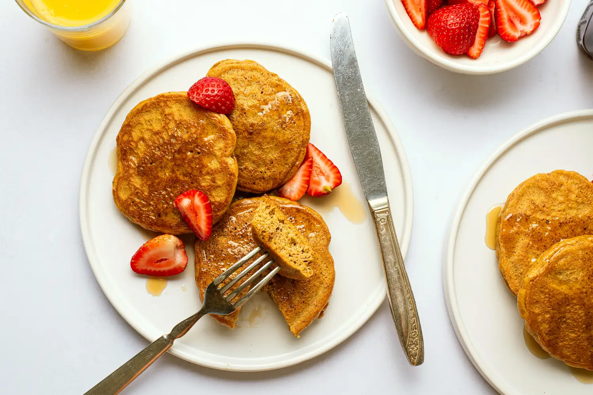

Home
Pizza
Peanut Butter Fudge
Breakfast Pancakes

Breakfast for every morning
This pancake recipe produces thick, fluffy, and all-around delicious pancakes with just a few ingredients that are probably already in your kitchen
Ingredients
- 2 large eggs
- 1/4 cup creamy almond butter, stirred well before measuring
- 1/2 teaspoon baking powder
- 1 pinch salt (if your almond butter is unsalted)
- Crack the eggs into a medium bowl and whisk until smooth. Add the almond butter, baking powder, salt, and any optional add-ins (except the chocolate chips), then whisk until fully combined and slightly thickened. I like to use my electric hand mixer for this part—it makes the pancakes extra fluffy! The batter should be pourable but not runny. Allow the batter to rest while you heat your pan.
- Warm a nonstick skillet (I use my 8-inch one) over medium-low heat and lightly grease with vegetable oil. Spoon the batter into the pan to form 3 to 4 small pancakes, 1 to 2 tablespoons of batter each. Cook until the edges are set and the bottoms are golden, 2 to 3 minutes. If you’re adding mini chocolate chips, now’s the time—sprinkle them on before flipping.
- Flip gently with a thin spatula and cook until the second side is set, another 1 to 2 minutes. Repeat cooking with the remaining batter, re-greasing your pan lightly in between batches. Serve.
- Add preferred toppings